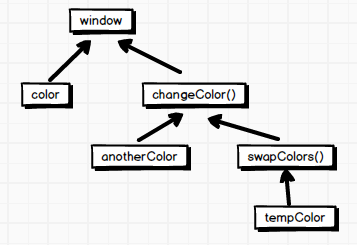

(点击上方公众号，可快速关注)
作者：景庄（@晓风well）
网址：http://wwsun.github.io/posts/scope-and-context-in-javascript.html
JavaScript对于作用域（Scope）和上下文（Context）的实现是这门语言的一个非常独到的地方，部分归功于其独特的灵活性。函数可以接收不同的的上下文和作用域。这些概念为JavaScript中的很多强大的设计模式提供了坚实的基础。然而这也概念也非常容易给开发人员带来困惑。为此，本文将全面的剖析这些概念，并阐述不同的设计模式是如何利用它们的。
上下文（Context）和作用域（Scope）
首先需要知道的是，上下文和作用域是两个完全不同的概念。多年来，我发现很多开发者会混淆这两个概念（包括我自己），错误的将两个概念混淆了。平心而论，这些年来很多术语都被混乱的使用了。
函数的每次调用都有与之紧密相关的作用域和上下文。从根本上来说，作用域是基于函数的，而上下文是基于对象的。换句话说，作用域涉及到所被调用函数中的变量访问，并且不同的调用场景是不一样的。上下文始终是this关键字的值，它是拥有（控制）当前所执行代码的对象的引用。
变量作用域
一个变量可以被定义在局部或者全局作用域中，这建立了在运行时（runtime）期间变量的访问性的不同作用域范围。任何被定义的全局变量，意味着它需要在函数体的外部被声明，并且存活于整个运行时（runtime），并且在任何作用域中都可以被访问到。在ES6之前，局部变量只能存在于函数体中，并且函数的每次调用它们都拥有不同的作用域范围。局部变量只能在其被调用期的作用域范围内被赋值、检索、操纵。
需要注意，在ES6之前，JavaScript不支持块级作用域，这意味着在if语句、switch语句、for循环、while循环中无法支持块级作用域。也就是说，ES6之前的JavaScript并不能构建类似于Java中的那样的块级作用域（变量不能在语句块外被访问到）。但是，从ES6开始，你可以通过let关键字来定义变量，它修正了var关键字的缺点，能够让你像Java语言那样定义变量，并且支持块级作用域。看两个例子：
ES6之前，我们使用var关键字定义变量：
function func() {
if (true) {
var tmp = 123;
}
console.log(tmp); // 123
}
之所以能够访问，是因为var关键字声明的变量有一个变量提升的过程。而在ES6场景，推荐使用let关键字定义变量：
function func() {
if (true) {
let tmp = 123;
}
console.log(tmp); // ReferenceError: tmp is not defined
}
这种方式，能够避免很多错误。
什么是this上下文
上下文通常取决于函数是如何被调用的。当一个函数被作为对象中的一个方法被调用的时候，this被设置为调用该方法的对象上：
var obj = {
foo: function(){
alert(this === obj);
}
};
obj.foo(); // true
这个准则也适用于当调用函数时使用new操作符来创建对象的实例的情况下。在这种情况下，在函数的作用域内部this的值被设置为新创建的实例：
function foo(){
alert(this);
}
new foo() // foo
foo() // window
当调用一个为绑定函数时，this默认情况下是全局上下文，在浏览器中它指向window对象。需要注意的是，ES5引入了严格模式的概念，如果启用了严格模式，此时上下文默认为undefined。
执行环境（execution context）
JavaScript是一个单线程语言，意味着同一时间只能执行一个任务。当JavaScript解释器初始化执行代码时，它首先默认进入全局执行环境（execution context），从此刻开始，函数的每次调用都会创建一个新的执行环境。
这里会经常引起新手的困惑，这里提到了一个新的术语——执行环境（execution context），它定义了变量或函数有权访问的其他数据，决定了它们各自的行为。它更偏向于作用域的作用，而不是我们前面讨论的上下文（Context）。请务必仔细的区分执行环境和上下文这两个概念（注：英文容易造成混淆）。
说实话，这是个非常糟糕的命名约定，但是它是ECMAScript规范制定的，你还是遵守吧。
每个函数都有自己的执行环境。当执行流进入一个函数时，函数的环境就会被推入一个环境栈中（execution stack）。在函数执行完后，栈将其环境弹出，
把控制权返回给之前的执行环境。ECMAScript程序中的执行流正是由这个便利的机制控制着。
执行环境可以分为创建和执行两个阶段。在创建阶段，解析器首先会创建一个变量对象（variable object，也称为活动对象 activation object），它由定义在执行环境中的变量、函数声明、和参数组成。在这个阶段，作用域链会被初始化，this的值也会被最终确定。在执行阶段，代码被解释执行。
每个执行环境都有一个与之关联的变量对象（variable object），环境中定义的所有变量和函数都保存在这个对象中。
需要知道，我们无法手动访问这个对象，只有解析器才能访问它。
作用域链（The Scope Chain）
当代码在一个环境中执行时，会创建变量对象的一个作用域链（scope chain）。作用域链的用途是保证对执行环境有权访问的所有变量和函数的有序访问。作用域链包含了在环境栈中的每个执行环境对应的变量对象。通过作用域链，可以决定变量的访问和标识符的解析。注意，全局执行环境的变量对象始终都是作用域链的最后一个对象。我们来看一个例子：
var color = "blue";
function changeColor(){
var anotherColor = "red";
function swapColors(){
var tempColor = anotherColor;
anotherColor = color;
color = tempColor;
// 这里可以访问color, anotherColor, 和 tempColor
}
// 这里可以访问color 和 anotherColor，但是不能访问 tempColor
swapColors();
}
changeColor();
// 这里只能访问color
console.log("Color is now " + color);
上述代码一共包括三个执行环境：全局环境、changeColor()的局部环境、swapColors()的局部环境。上述程序的作用域链如下图所示：

从上图发现。内部环境可以通过作用域链访问所有的外部环境，但是外部环境不能访问内部环境中的任何变量和函数。这些环境之间的联系是线性的、有次序的。
对于标识符解析（变量名或函数名搜索）是沿着作用域链一级一级地搜索标识符的过程。搜索过程始终从作用域链的前端开始，然后逐级地向后（全局执行环境）回溯，直到找到标识符为止。
闭包
闭包是指有权访问另一函数作用域中的变量的函数。换句话说，在函数内定义一个嵌套的函数时，就构成了一个闭包，它允许嵌套函数访问外层函数的变量。通过返回嵌套函数，允许你维护对外部函数中局部变量、参数、和内函数声明的访问。这种封装允许你在外部作用域中隐藏和保护执行环境，并且暴露公共接口，进而通过公共接口执行进一步的操作。可以看个简单的例子：
function foo(){
var localVariable = 'private variable';
return function bar(){
return localVariable;
}
}
var getLocalVariable = foo();
getLocalVariable() // private variable
模块模式最流行的闭包类型之一，它允许你模拟公共的、私有的、和特权成员：
var Module = (function(){
var privateProperty = 'foo';
function privateMethod(args){
// do something
}
return {
publicProperty: '',
publicMethod: function(args){
// do something
},
privilegedMethod: function(args){
return privateMethod(args);
}
};
})();
模块类似于一个单例对象。由于在上面的代码中我们利用了(function() { ... })();的匿名函数形式，因此当编译器解析它的时候会立即执行。在闭包的执行上下文的外部唯一可以访问的对象是位于返回对象中的公共方法和属性。然而，因为执行上下文被保存的缘故，所有的私有属性和方法将一直存在于应用的整个生命周期，这意味着我们只有通过公共方法才可以与它们交互。
另一种类型的闭包被称为立即执行的函数表达式（IIFE）。其实它很简单，只不过是一个在全局环境中自执行的匿名函数而已：
(function(window){
var foo, bar;
function private(){
// do something
}
window.Module = {
public: function(){
// do something
}
};
})(this);
对于保护全局命名空间免受变量污染而言，这种表达式非常有用，它通过构建函数作用域的形式将变量与全局命名空间隔离，并通过闭包的形式让它们存在于整个运行时（runtime）。在很多的应用和框架中，这种封装源代码的方式用处非常的流行，通常都是通过暴露一个单一的全局接口的方式与外部进行交互。
Call和Apply
这两个方法内建在所有的函数中（它们是Function对象的原型方法），允许你在自定义上下文中执行函数。不同点在于，call函数需要参数列表，而apply函数需要你提供一个参数数组。如下：
var o = {};
function f(a, b) {
return a + b;
}
// 将函数f作为o的方法，实际上就是重新设置函数f的上下文
f.call(o, 1, 2); // 3
f.apply(o, [1, 2]); // 3
两个结果是相同的，函数f在对象o的上下文中被调用，并提供了两个相同的参数1和2。
在ES5中引入了Function.prototype.bind方法，用于控制函数的执行上下文，它会返回一个新的函数，并且这个新函数会被永久的绑定到bind方法的第一个参数所指定的对象上，无论该函数被如何使用。它通过闭包将函数引导到正确的上下文中。对于低版本浏览器，我们可以简单的对它进行实现如下（polyfill）：
if(!('bind' in Function.prototype)){
Function.prototype.bind = function(){
var fn = this,
context = arguments[0],
args = Array.prototype.slice.call(arguments, 1);
return function(){
return fn.apply(context, args.concat(arguments));
}
}
}
bind()方法通常被用在上下文丢失的场景下，例如面向对象和事件处理。之所以要这么做，是因为节点的addEventListener方法总是为事件处理器所绑定的节点的上下文中执行回调函数，这就是它应该表现的那样。但是，如果你想要使用高级的面向对象技术，或需要你的回调函数成为某个方法的实例，你将需要手动调整上下文。这就是bind方法所带来的便利之处：
function MyClass(){
this.element = document.createElement('div');
this.element.addEventListener('click', this.onClick.bind(this), false);
}
MyClass.prototype.onClick = function(e){
// do something
};
回顾上面bind方法的源代码，你可能会注意到有两次调用涉及到了Array的slice方法：
Array.prototype.slice.call(arguments, 1);
[].slice.call(arguments);
我们知道，arguments对象并不是一个真正的数组，而是一个类数组对象，虽然具有length属性，并且值也能够被索引，但是它们不支持原生的数组方法，例如slice和push。但是，由于它们具有和数组类似的行为，数组的方法能够被调用和劫持，因此我们可以通过类似于上面代码的方式达到这个目的，其核心是利用call方法。
这种调用其他对象方法的技术也可以被应用到面向对象中，我们可以在JavaScript中模拟经典的继承方式：
MyClass.prototype.init = function(){
// call the superclass init method in the context of the "MyClass" instance
MySuperClass.prototype.init.apply(this, arguments);
}
也就是利用call或apply在子类（MyClass）的实例中调用超类（MySuperClass）的方法。
ES6中的箭头函数
ES6中的箭头函数可以作为Function.prototype.bind()的替代品。和普通函数不同，箭头函数没有它自己的this值，它的this值继承自外围作用域。
对于普通函数而言，它总会自动接收一个this值，this的指向取决于它调用的方式。我们来看一个例子：
var obj = {
// ...
addAll: function (pieces) {
var self = this;
_.each(pieces, function (piece) {
self.add(piece);
});
},
// ...
}
在上面的例子中，最直接的想法是直接使用this.add(piece)，但不幸的是，在JavaScript中你不能这么做，因为each的回调函数并未从外层继承this值。在该回调函数中，this的值为window或undefined，因此，我们使用临时变量self来将外部的this值导入内部。我们还有两种方法解决这个问题：
使用ES5中的bind()方法
var obj = {
// ...
addAll: function (pieces) {
_.each(pieces, function (piece) {
this.add(piece);
}.bind(this));
},
// ...
}
使用ES6中的箭头函数
var obj = {
// ...
addAll: function (pieces) {
_.each(pieces, piece => this.add(piece));
},
// ...
}
在ES6版本中，addAll方法从它的调用者处获得了this值，内部函数是一个箭头函数，所以它集成了外部作用域的this值。
注意：对回调函数而言，在浏览器中，回调函数中的this为window或undefined（严格模式），而在Node.js中，回调函数的this为global。实例代码如下：
function hello(a, callback) {
callback(a);
}
hello('weiwei', function(a) {
console.log(this === global); // true
console.log(a); // weiwei
});
小结
在你学习高级的设计模式之前，理解这些概念非常的重要，因为作用域和上下文在现代JavaScript中扮演着的最基本的角色。无论我们谈论的是闭包、面向对象、继承、或者是各种原生实现，上下文和作用域都在其中扮演着至关重要的角色。如果你的目标是精通JavaScript语言，并且深入的理解它的各个组成，那么作用域和上下文便是你的起点。
参考资料
Understanding Scope and Context in JavaScript
JavaScript高级程序设计，section 4.2
Arrow functions vs. bind()
理解与使用Javascript中的回调函数
本文属于「前端大全」Javascript 分类。
回复 Javascript 查看更多 Javascript 技术干货。
【今日微信公号推荐↓】

更多推荐请看《值得关注的技术和设计公众号》
其中推荐了包括技术、设计、极客 和 IT相亲相关的热门公众号。技术涵盖：Python、Web前端、Java、安卓、iOS、PHP、C/C++、.NET、Linux、数据库、运维、大数据、算法、IT职场等。点击《值得关注的技术和设计公众号》，发现精彩！

![]()